beth
 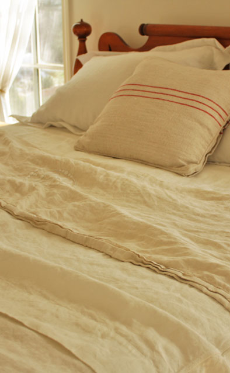
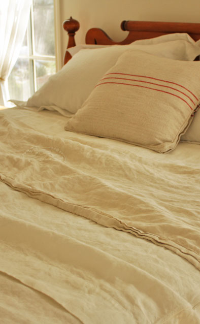
For the past three years, my husband and I have been lovingly restoring a forlorn "cottage in the woods" in the foothills of Tustin, California. Our home is a reflection of 33 years of collecting, restoring, and inheriting the things we love and cherish. I have always had a soft spot for anything linen. There is nothing quite like the cool, soft, rumply feel of this heavenly fabric. I am so excited to have found Tricia and her lovely products. The Summer Cover in the Orkney weave is absolutely wonderful. It's been such a pleasure, especially during this heat wave we are experiencing in Southern California. Thank you Tricia, I see a duvet cover in my future! ~ beth
 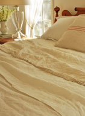
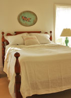
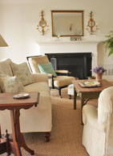
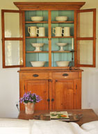
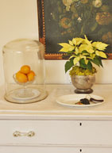
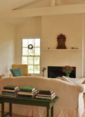
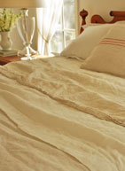
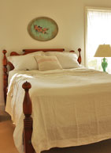
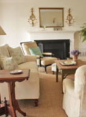
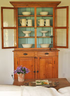
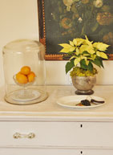
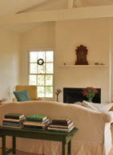